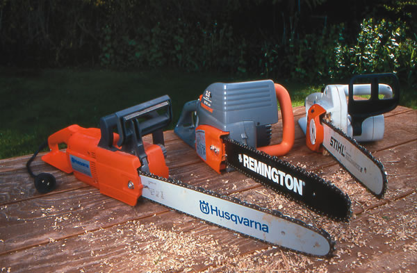
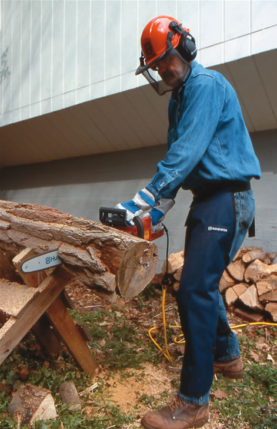
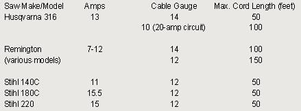

In 1997, I traded my two gas chain saws for an electric model, and I’ve never regretted it. My electric saw emits no exhaust and requires no maintenance other than refilling the chain-oil reservoir and sharpening the chain. With just a flip of the switch, my electric saw shuts off, providing welcome silence while I reposition logs. Also, unlike a gas-powered saw, my electric always starts.
In contrast, long after using my gas-powered saws, I could still smell the exhaust in my nostrils. To keep a gas saw running well, you must dispose of stale fuel, mix fresh gas with engine oil, adjust carburetor settings, and occasionally replace a faulty spark plug or a broken starter cord. Besides, unused fuel left in a saw for a season or two tends to gum up, which can damage the carburetor. Also, gas saws generally weigh up to 2 pounds more than comparably powered electrics.
Electric saws have drawbacks too, most notably the limited work space imposed by the length of their cords. Dragging and repositioning a power cord can be bothersome, as well. What’s more, temperatures below 40 degrees dramatically reduce cord pliability.
The chain of an electric saw travels slower than that of a gas saw. This means you will need to be a bit more patient with an electric as its chain works its way through wood. Of course, after a power outage, you will have to wait until the power returns to do any work with the electric saw.
Although the power cord makes electric saws less appropriate than gas saws for the felling and limbing of large trees, electrics are great for bucking logs for firewood, as well as for cutting landscape timbers and notching logs for log building.
If you need a chain saw for these and other types of work near a power source, an electric saw will serve you well.
I tested three electrics that have very different price points and features. Thus, I’ll simply describe the three as alternatives to gas saws, rather than evaluate them head-to-head. Measured at ear level, the noise from all three saws ranged between 89 and 96 decibels (dB), strongly indicating need for hearing protection. (In industrial settings, 85 dB is the threshold for which hearing protection becomes mandatory.)
Stihl 180C. I’ve used this 10-pound, 2.3-horsepower electric saw for seven years, and it’s performed wonderfully. Complete with a fast-stopping chain brake, it has a 15-amp motor and a 16-inch bar. I’ve used the 180C to cut through the notoriously dense, hard crotch wood of a 20-inch-diameter maple. The 180C has as much torque power as a midsize gasoline-powered saw.
The Stihl 180C costs about $370; the 140C costs $300 to $320, depending on its bar length, and the heavier-duty 220 costs about $500.
Husqvarna 316. This 10-pound, 7-ounce saw is rated 2.2 horsepower and 13 amps. It has good heft and a solid feel, as well as an impressive chain brake that activates when the operator’s left hand bumps against the left hand guard. As an added safety feature, the chain brake is activated by inertia if the chain ever catches on the topside of the bar, suddenly pushing the saw toward the operator. The 316’s helical drive allows the motor to line up with the saw’s long axis, so it doesn’t project its bulk leftward, as other saws do.
Priced at about $230, the Husqvarna 316 is virtually identical to the Jonsered 2116E - both companies are subsidiaries of the Electrolux Group.
Remington 625-01. The largest of several Remington models marketed to the cost-conscious consumer, this 9-pound, 10-ounce, 12-amp saw offers a surprising 3.5 horsepower for its weight and low $100 price. It’s the lightest of the three saws tested.
Almost all chain saw manufacturers specify standard chain-and-bar oil with high viscosity (stickiness), but Remington instead recommends standard SAE-30 motor oil for chain lubrication in temperatures between 30 and 75 degrees. However, because the oil is gravity-fed, the oil tank must be emptied after each work session; otherwise, it will drain onto your storage surface. This saw seems less solid than the Stihl and Husqvarna, yet it appears sturdy enough for modest amounts of work each year.
The 625-01 costs about $100; smaller Remington electrics can cost as little as $50.
Maximum cord length is dictated by a saw’s amperage rating. Most outdoor circuits are 15-amp, and cords lose amperage the longer they run from the source. Under load, saw motors overheat unless the cord is of sufficient gauge and shortness to maintain sufficient amperage. Saws rated in the 7- to 12-amp range can work at distances up to 150 feet, with a specified cord. Outdoor-rated cords are round-jacketed and stamped with a suffix of “W” or “W-A,” for Wet or Wet-Applications, as in SJTW or SJTW-A.
See the Image Gallery for the cord gauges and allowable lengths suggested by the manufacturers of the three saws tested, assuming grounded, three-wire, 15-amp circuits (except as noted).
Neil Soderstrom is the author of Chainsaw Savvy: Cutting, Sharpening, Troubleshooting. He lives in Wingdale, N.Y.
|
 NEIL SODERSTROM The three electric saws we tested cover a wide range of prices and features. |
 NEIL SODERSTROM Neil's electric saw "emits no exhaust and requires no maintenance other than refilling the chain-oil reservoir and sharpening the chain." |
NEIL SODERSTROM The Remington 625-01 electric saw features a hole and hitch on the back handle that prevents the extension cord from pulling out. |
|
NEIL SODERSTROM Outdoor-rated cords are round-jacketed and stamped with a suffix of “W” or “W-A,” for Wet or Wet-Applications, as in SJTW or SJTW-A. |
 MOTHER EARTH NEWS STAFF Cord gauges and allowable lengths suggested by the manufacturers of the three saws tested, assuming grounded, three-wire, 15-amp circuits (except as noted). |
|